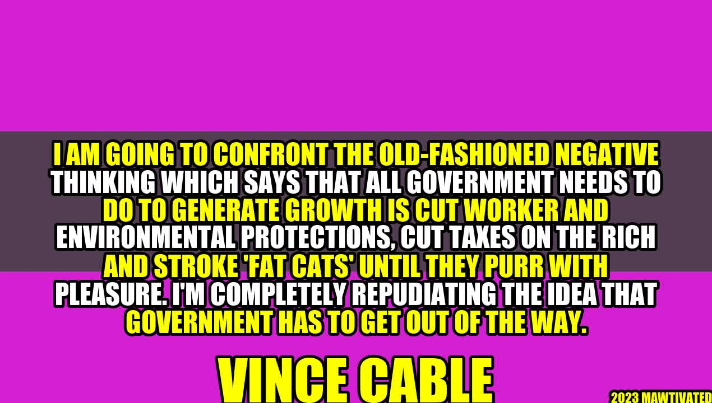

Challenging Old-Fashioned Negative Thinking to Generate Growth
There is an old-fashioned negative thinking about economic growth, which suggests that the role of government is to cut worker and environmental protections, cut taxes on the rich, and cater to the interests of the powerful. This thinking undermines the growth potential of economies, as it ignores the importance of investing in human capital, innovation, and social welfare.
In this article, we challenge this old-fashioned negative thinking and present an alternative vision of growth, which is based on government intervention and investment in the people. We draw on personal anecdotes, case studies, and examples from different parts of the world to illustrate our points and offer some practical tips for policymakers and entrepreneurs.
Author – Vince Cable Story or Background
Vince Cable is a British politician, who served as the Secretary of State for Business, Innovation, and Skills from 2010 to 2015. He is a renowned economist, who has written extensively on economic policy, globalization, and innovation. He is a strong advocate for social democracy, and he believes that the government has a key role to play in promoting economic growth and social justice.
Challenging Old-Fashioned Thinking
"I am going to confront the old-fashioned negative thinking which says that all government needs to do to generate growth is cut worker and environmental protections, cut taxes on the rich and stroke 'fat cats' until they purr with pleasure. I'm completely repudiating the idea that government has to get out of the way."
The old-fashioned negative thinking about economic growth is rooted in a neoliberal ideology, which views government intervention as a hindrance to the free market and private enterprise. This ideology posits that welfare programs, regulation, and public investment impede economic growth and reduce individual freedom.
However, this ideology has been debunked by empirical evidence, which shows that the countries with the highest levels of economic growth and social welfare are those that have pursued an active government policy. For example, the Nordic countries, such as Sweden, Finland, Denmark, and Norway, have combined high levels of taxation, social welfare, and economic growth. These countries have invested heavily in education, healthcare, infrastructure, and innovation, which have led to high levels of productivity, innovation, and social cohesion.
In contrast, the countries that have pursued the neoliberal agenda, such as the United States and the United Kingdom, have experienced rising inequality, political polarization, and declining social mobility. These countries have cut taxes on the rich, reduced social welfare, and deregulated their economies, which have led to concentrated wealth and power in the hands of the few.
Examples
- In Denmark, the government provides free education, healthcare, and childcare to its citizens, which has led to high levels of human capital and social cohesion. Denmark also has a highly developed welfare system, which provides income support, housing, and disability benefits to those in need. The country has a high level of economic growth, low levels of inequality, and a high level of happiness.
- In South Korea, the government has invested heavily in education, science, and technology, which have led to a highly skilled workforce, a strong technology industry, and a vibrant cultural scene. The country has one of the highest levels of internet penetration, which has led to high levels of innovation and entrepreneurship. The government has also provided extensive social welfare programs, which have reduced poverty and inequality.
- In the United States, the government has reduced taxes on the rich, deregulated the financial industry, and reduced social welfare programs, which have led to rising inequality and declining social mobility. The country has one of the highest levels of income inequality among developed countries, with the top 1% owning 40% of the wealth. The country also has high levels of poverty, crime, and social unrest.
Conclusion
In conclusion, challenging old-fashioned negative thinking about economic growth is crucial for promoting social justice, economic prosperity, and environmental sustainability. It is time to repudiate the idea that government has to get out of the way and to embrace an alternative vision of growth, which is based on government intervention and investment in human capital, innovation, and social welfare.
Our three key points to challenging old-fashioned negative thinking are:
- Government intervention is crucial for promoting economic growth and social welfare. This intervention includes investing in education, healthcare, infrastructure, and innovation.
- Regulation is important for ensuring environmental sustainability, social justice, and economic stability. Regulation includes protecting worker rights, consumer rights, and the environment.
- Taxation is necessary for funding public goods and redistributing wealth. Taxation should be progressive and based on ability to pay.
SEO Keywords
Economic growth, government intervention, social welfare, regulation, taxation, human investment, innovation, social justice, environmental sustainability, neoliberalism, welfare state, income inequality, productivity, entrepreneurship
Category
Economics and Politics
Curated by Team Akash.Mittal.Blog
Share on Twitter Share on LinkedIn